Ford Explorer ST-Line Panorama 360Grad Memory
38900 PLN
Steinbach-Hallenberg OT Herges-Hallenberg
78.829 km
Fahrzeugnummer: 024866
Explorer EcoBoost Plug-in Hybrid 7Si
ACC Abstandstempomat
Sitzheizung
Sitzbelüftung
beheizbares Leder-Multilenkrad
Sportsitze
Soundsystem B&O
behiezbare Frontscheibe
el. Heckklappe
Anhängekupplung
Pano-Schiebedach el.
ParkAssistent 360 Grad Kamera
Ausstattung:
- Abgedunkelte Scheiben
- Armlehne
- Beheizbare Frontscheibe
- Beheizbares Lenkrad
- Elektr. Fensterheber
- Elektr. Heckklappe
- Elektr. Seitenspiegel
- Elektr. Seitenspiegel anklappbar
- Elektr. Sitzeinstellung
- Innenspiegel autom. abblendend
- Lederlenkrad
- Panorama-Dach
- Schiebedach
- Schlüssellose Zentralverriegelung (Keyless)
- Sitzheizung
- Sitzheizung hinten
- Sitzbelüftung
- Zentralverriegelung
- Berganfahrassistent
- Bordcomputer
- Multifunktionslenkrad
- Schaltwippen
- Servolenkung
- Bluetooth
- Freisprecheinrichtung
- Navigationssystem
- Soundsystem
- Touchscreen
- Sommerreifen
- Leichtmetallfelgen
- Dachreling
Tuner/Radio:
Geschwindigkeitsregulierung:
Anhängerkupplung:- Anhängerkupplung abnehmbar
Klimatisierung:
Sicherheit:- Alarmanlage
- ABS
- Abstandswarner
- ESP
- Fernlichtassistent
- Geschwindigkeitsbegrenzer
- Isofix
- Lichtsensor
- Müdigkeitswarner
- Nebelscheinwerfer
- Notbremsassistent
- Regensensor
- Reifendruckkontrolle
- Spurhalteassistent
- Start/Stopp-Automatik
- Verkehrszeichenerkennung
Hauptscheinwerfer:
Pannenhilfe:
Einparkhilfe:
Sport:
Innenausstattung:
Farbe der Innenausstattung:
Vor Herausgabe der Fahrzeugdokumente bestehen wir auf eine Legitimation des Privat-Käufers durch ein Ausweisdokument und bei Gewerbetreibenden oder Händlern durch eine Gewerbeanmeldung bzw. ein Ausweisdokument. Bitte vereinbaren Sie in jedem Fall einen Besichtungs-/Probefahrtstermin, damit sichergestellt ist, dass das Auto auch da ist, wenn Sie kommen und nicht zwischenzeitlich verkauft wurde. Im Preis enthalten ist nur ein Radsatz und bei Elektrofahrzeugen nur ein Ladekabel. Ein Navigationsdatenträger ist nicht zwingend im Kaufpreis enthalten! Diese Aufzählung dient nur der besseren Identifizierung des Fahrzeugs und ist keine verbindliche Festlegung, Zusicherung oder Beschreibung des Ausstattungsumfanges, sie wird nicht Bestandteil des Kaufvertrages. Prüfen Sie daher bitte den genauen Ausstattungsumfang vor Ort oder fragen Sie unser Verkaufspersonal. Ausschlaggebend für die exakten Ausstattungsdetails sind nur etwaige schriftliche Vereinbarungen im Kaufvertrag. Irrtümer und Fehler in der Beschreibung von Fahrzeug und Ausstattung sowie Zwischenverkauf bleiben daher ausdrücklich vorbehalten. SCHECKHEFTGEPLEGTE Fahrzeuge Fahrzeuge aus 1.Hand DEUTSCHE FAHRZEUGE FINANZIERUNG UND INZAHLUNGNAHME MÖGLICH HU/AU (TÜV) siehe oben – Bei HU/TÜV neu gilt: wird erst nach Kaufvertrag Abschluss erstellt WINTERRÄDER KÖNNEN SOFERN VERFÜGBAR GEGEN AUFPREIS ERWORBEN WERDEN! NETTOVERKAUF INS AUSLAND MÖGLICH (WIR HELFEN IHNEN BEI DER ABWICKLUNG DER FORMALITÄTEN) Weitere interessante Angebote von Leasing- und Geschäftsfahrzeugen finden Sie auf unserer Homepage WWW.AUTOHAUS-JWHG.DE Wir sind Montag - Freitag von 9.00 - 18.00 Uhr und Samstag von 9.30 – 14.00 Uhr durchgehend für Sie da. (MX)
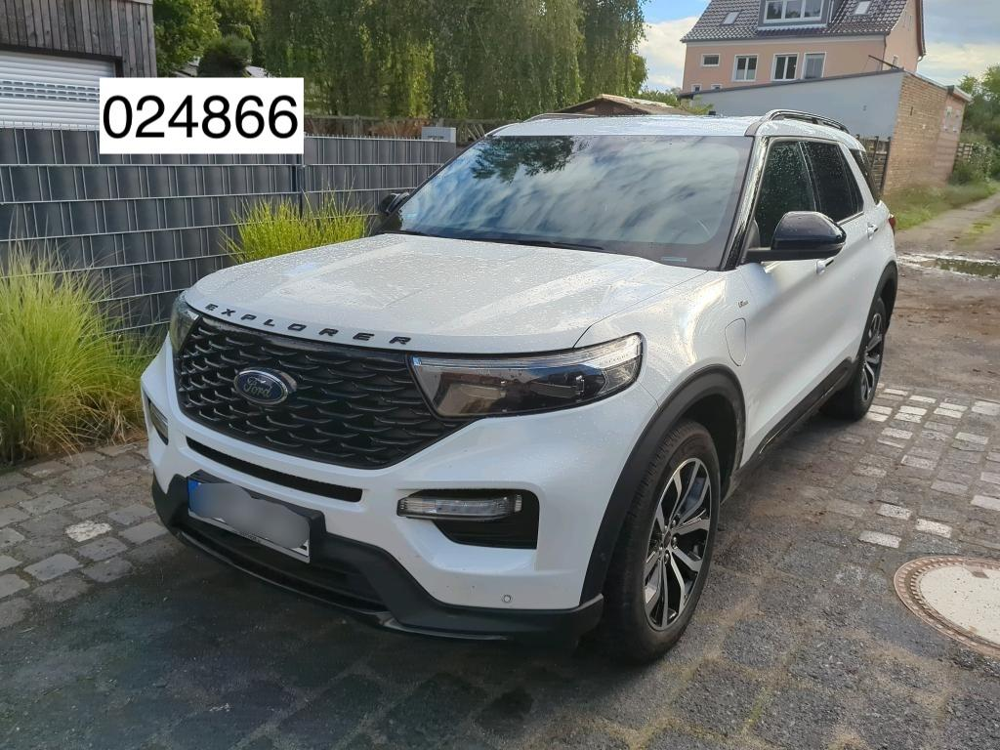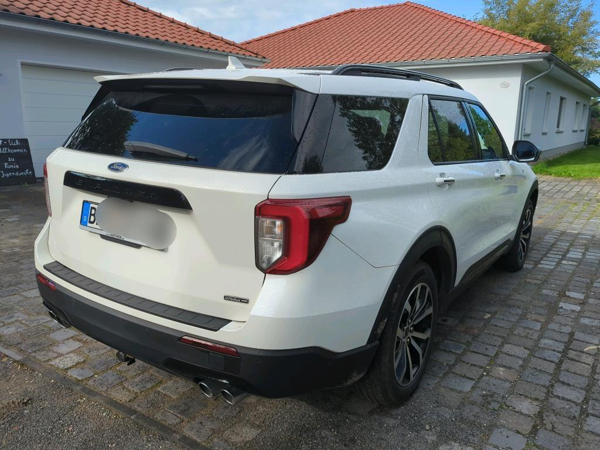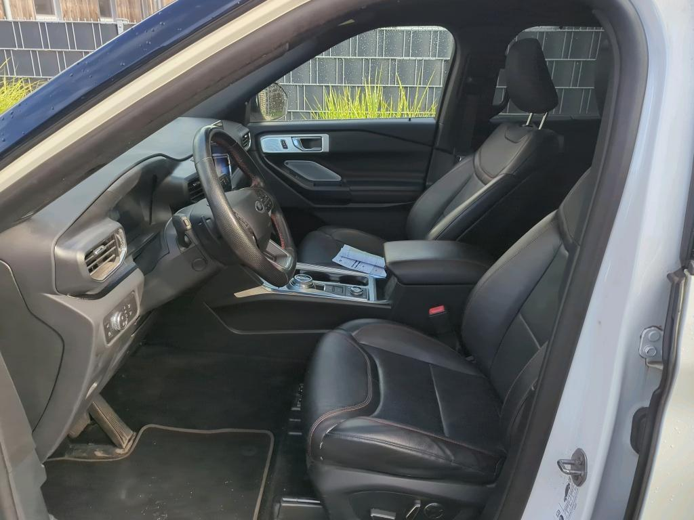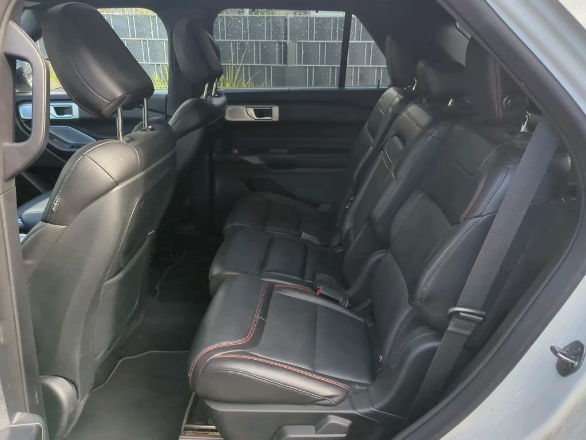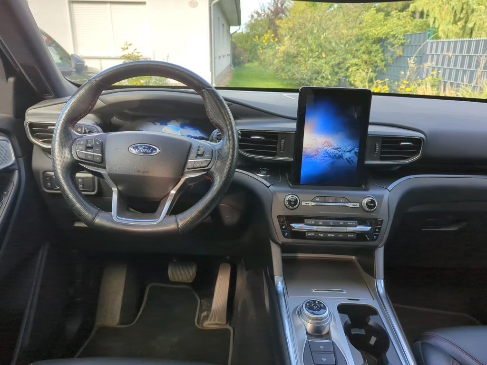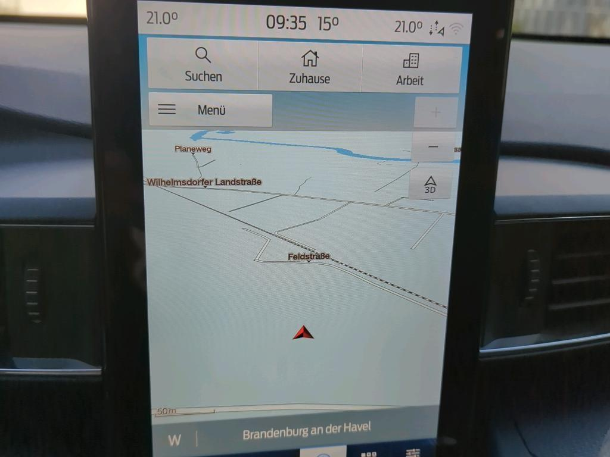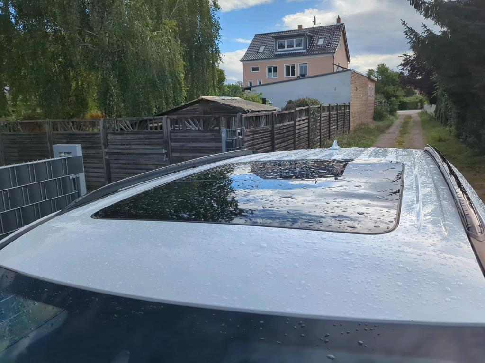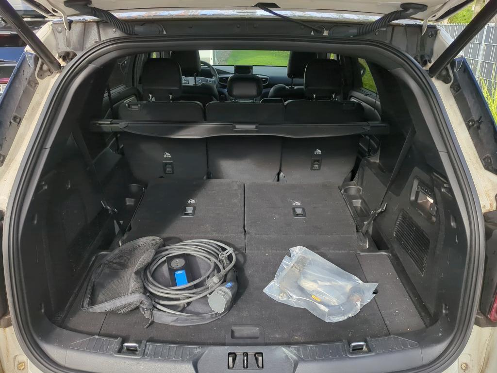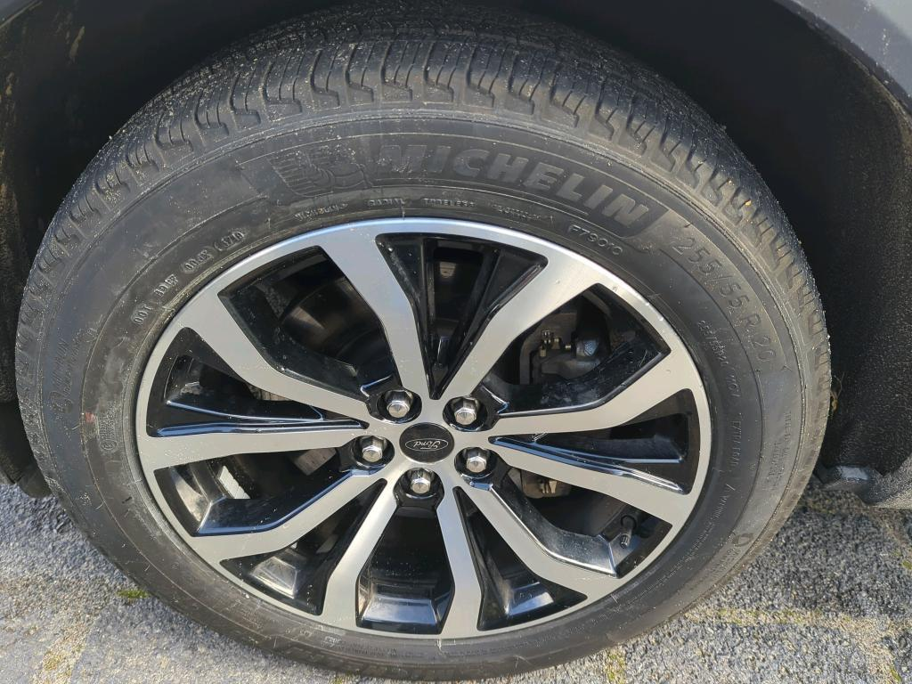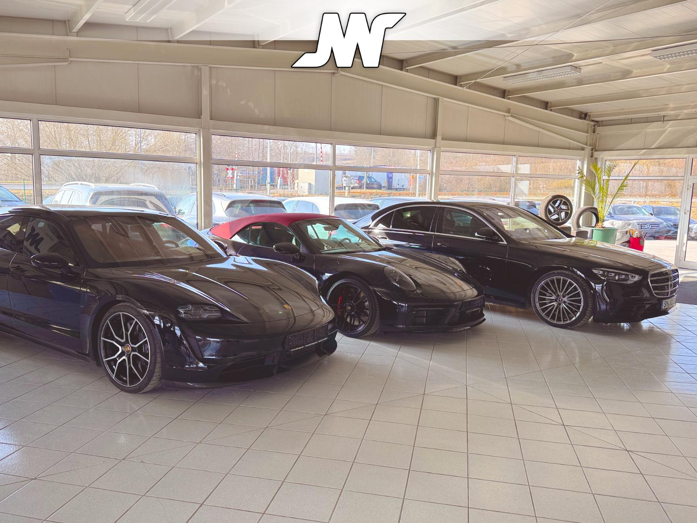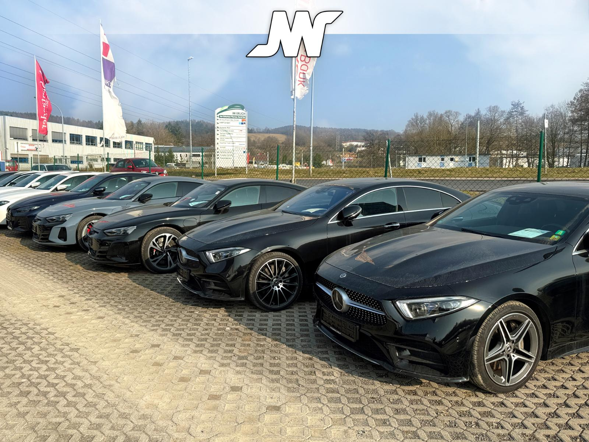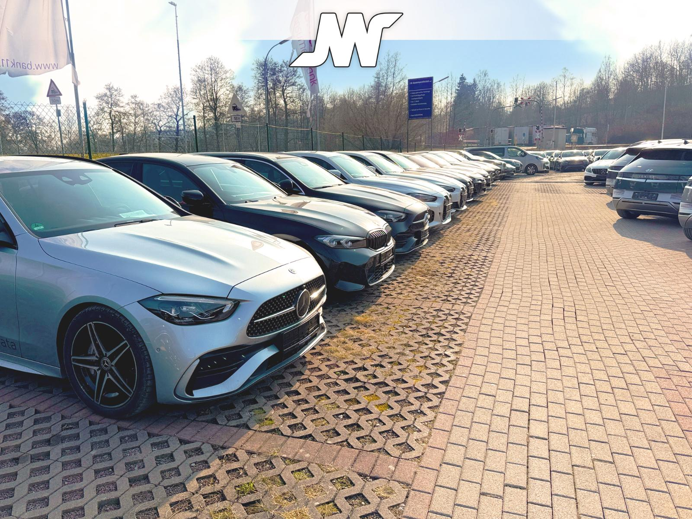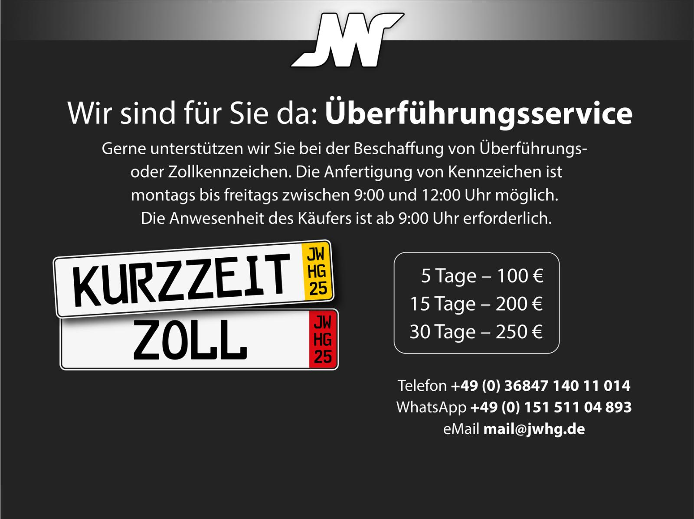